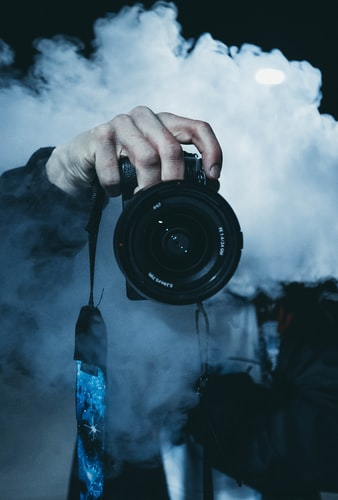

| IMAGE |
DISCRIPTION |
| |
Traveling is one of the best way to enhance personal growth. It enables you to do things different from your daily routine activities. When you travel, you step out from your comfort zone to a different environment which makes you become more responsible and gives a sense of independence. |
 |
What I've enjoyed most, though, is meeting people who have a real interest in food and sharing ideas with them. Good food is a global thing and I find that there is always something new and amazing to learn - I love it! |
|
Explore is a verb that means "to travel in or through." You might explore an island, a European city, or the rooms of an unfamiliar house. The Latin root of explore is explorare, meaning "investigate or search out." When you explore a new place, you want to see interesting things and get to know its people. |
|  |
Photography is the art, application, and practice of creating durable images by recording light, either electronically by means of an image sensor, or chemically by means of a light-sensitive material such as photographic film. |